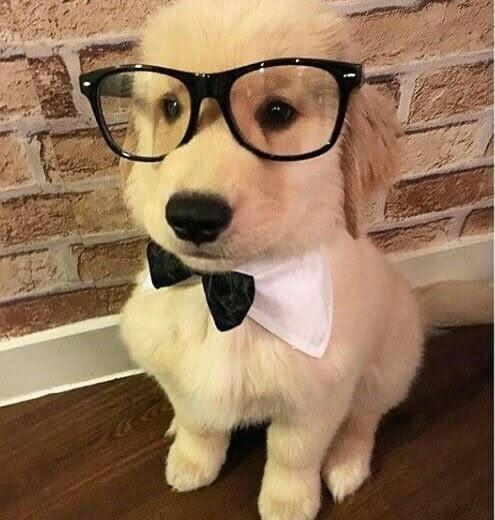
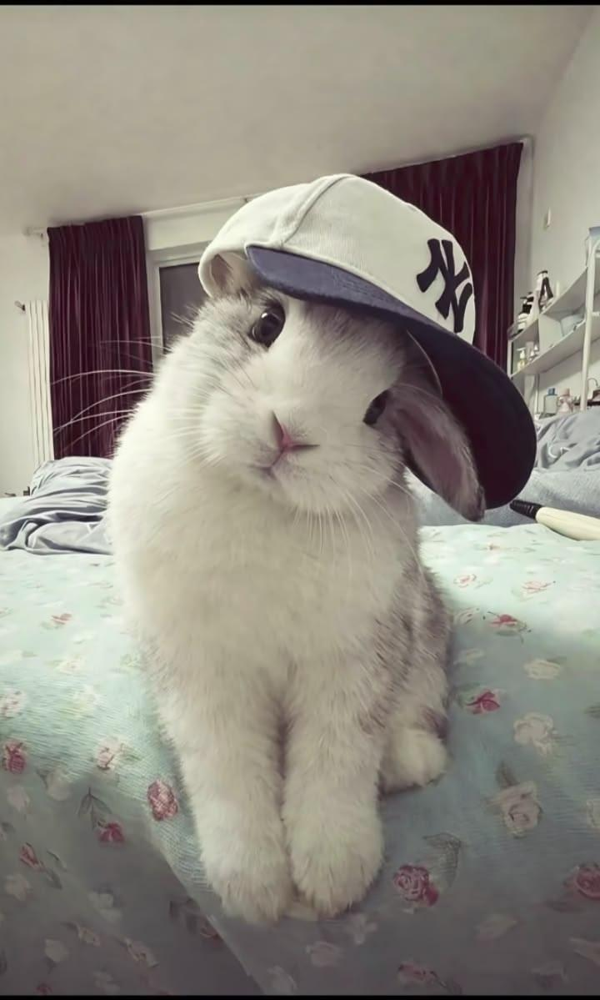
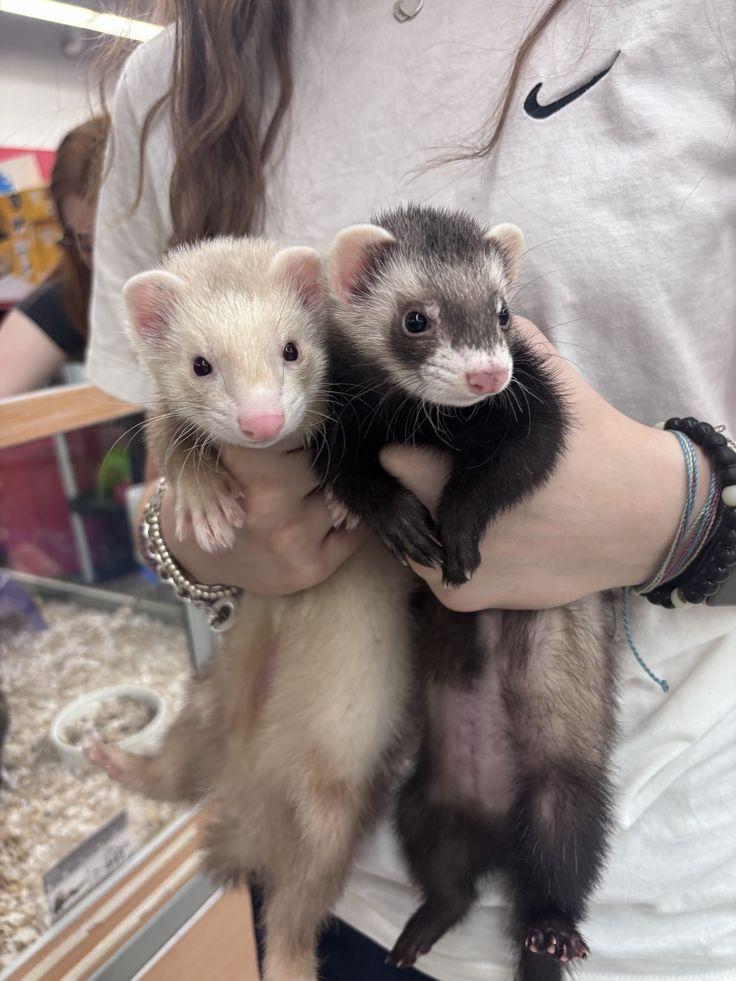
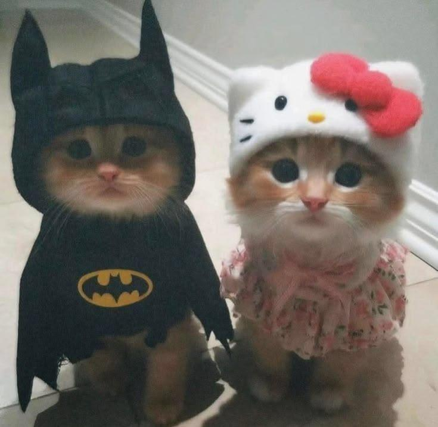

Adopt
Give a rescued animal a forever home. Every adoption saves a life and opens space for another animal in need.
Start Adoption EnquiryRescuing. Rehabilitating. Rehoming.
Join us in giving abandoned and abused animals the love, care, and forever homes they deserve.
PetPrints Animal Rescue is a non-profit organisation dedicated to rescuing animals in need across South Africa. We provide medical care, rehabilitation, and loving temporary homes until each animal finds their forever family.
Whether you are looking to adopt, volunteer your time, or support us through sponsorship, there is a place for you in our mission.
Give a rescued animal a forever home. Every adoption saves a life and opens space for another animal in need.
Start Adoption EnquiryHelp with animal care, events, transport or administration. Your time makes a real difference.
Volunteer With UsSupport the medical and daily needs of animals in our care through monthly or one-off donations.
Become a SponsorProvide a temporary home while we find a permanent one. Fostering is one of the most valuable ways to help.
Foster an AnimalThese are just a few of the many animals that have found (or are looking for) their forever homes through PetPrints.



